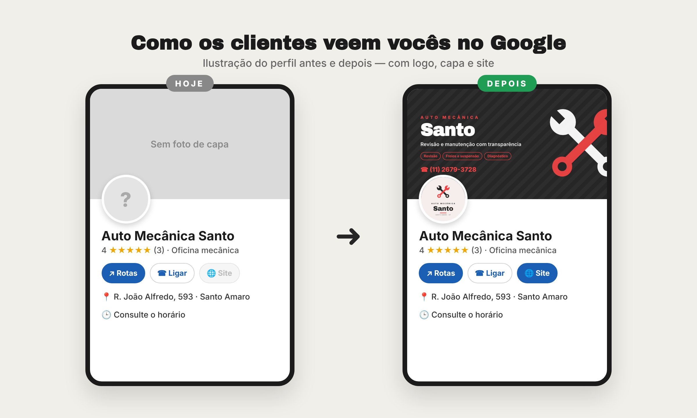
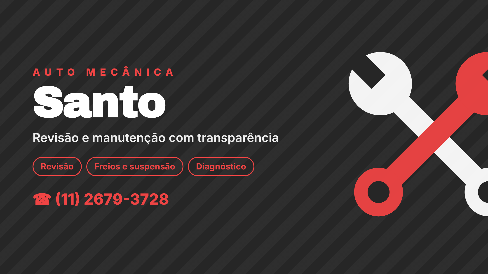

Auto Mecânica Santo
Proposta para deixar o perfil de vocês no Google mais completo: logo, foto de capa e site.

Logo e capa propostos

Proposta preparada por Michel Orlow · (11) 97337-0855. Material de demonstração — nada foi alterado no perfil de vocês.